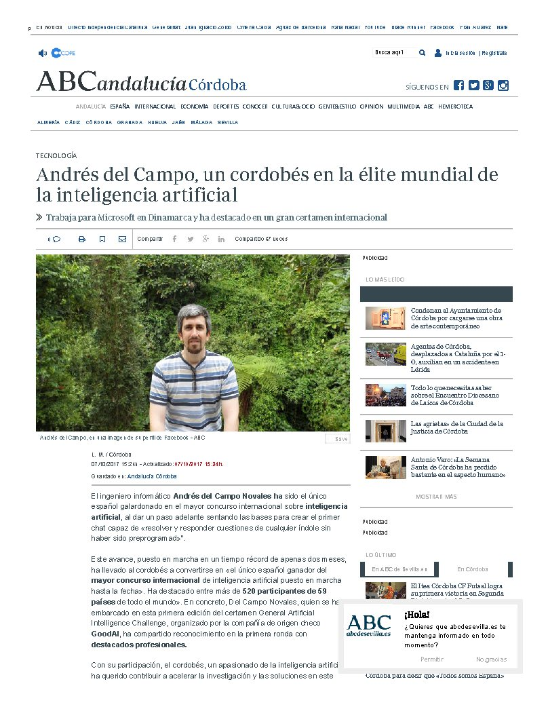
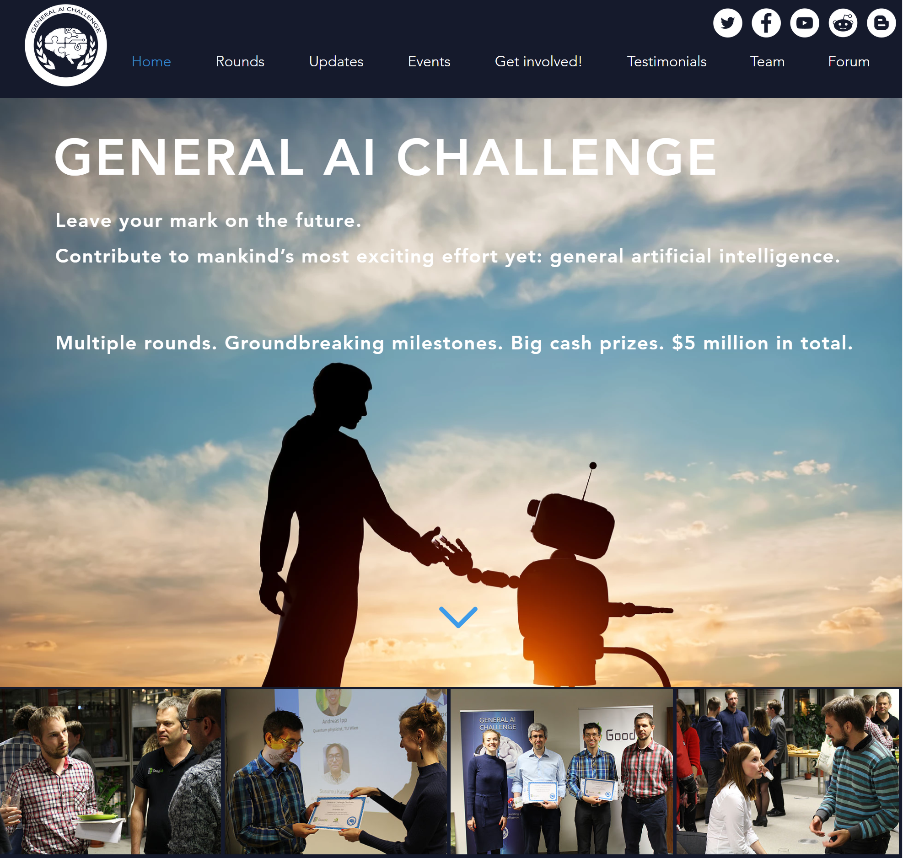
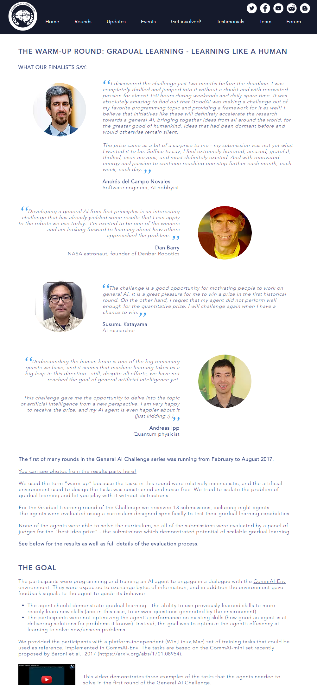
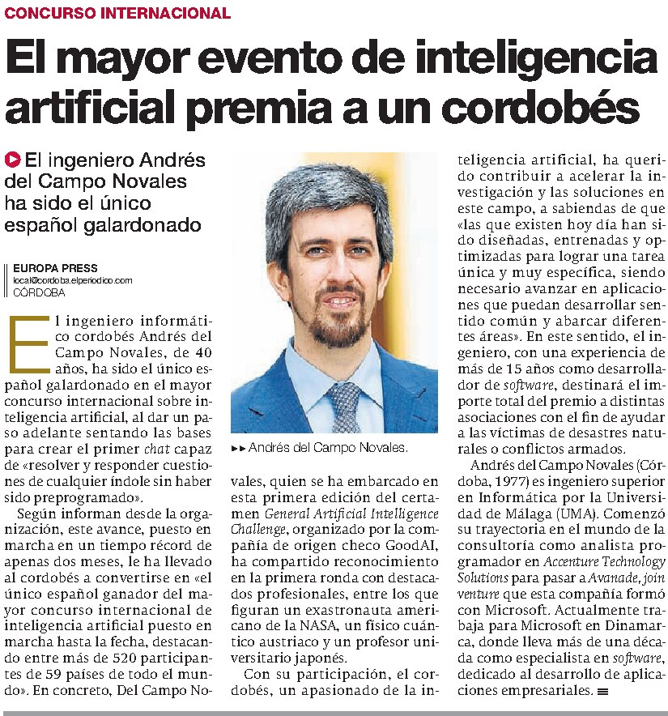

ABC Andalucía
Andrés del Campo, un cordobés en la élite mundial de la inteligencia artificial (PDF)
I shared the prize in the qualitative category with a former NASA astronaut who founded a robotics company, a senior AI researcher from Japan, and an Austrian quantum physicist.
Could an agent learn a rule from examples and use it on a problem it had never seen? I built a C# agent to explore that question in the first round of GoodAI’s General AI Challenge.

The challenge environment sent text tasks and gave feedback on the responses. My agent compared examples to work out which parts of the input stayed constant and which ones changed. Two examples of reversing words, for instance, could become a rule the agent could apply to words it had never seen.
It learned patterns at both the word and character level. When examples at different lengths shared a pattern, the agent could infer how the rule extended to longer inputs. It could also combine learned transformations or recognize new ways of expressing familiar arithmetic operations.
GoodAI’s jury assessed the ideas behind each submission alongside a separate test of how the agents handled an unseen curriculum.

The prize drew coverage in three print pieces, at least 17 online articles, and one radio segment, with further mentions on social media. A few highlights are below.

Andrés del Campo, un cordobés en la élite mundial de la inteligencia artificial (PDF)

The 8 October print edition carried the Europa Press report on the award.
Read the Europa Press report